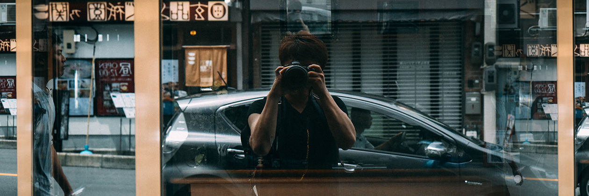

低调 / 关于自己

其实我很简单。
记录城市那些安静又美好的瞬间，更是夜间追光的中年人。
努力开一家属于自己的私人咖啡书屋，很遗憾无法实现。
关于设备。
主力 / AMD5900X + 32G内存 + B550主板 + 3070TI显卡
次机 / QN8H (i7 8700 ES) + 16G内存 + DeskMini 310
主力 / SONY A7r4a全画幅 + 70-200mm G + 适马（SIGMA）40mm F1.4 DG HSM | Art
次机 / SONY A6500微单 + 腾龙 18-300mm F/3.5-6 + 适马（SIGMA）16mm F1.4
次机 / 富士XT30II + 铭匠35mm f1.4 + 七工匝 50mm f1.2 + XF18-55mm f2.8 + 唯卓仕 85mm f1.8
富士X100s 旁轴微单
浩瀚M5手持稳定器 [落灰]
魔爪AirCross Air稳定器 + F6S监视器 [落灰]
GoPro HERO7 Black [落灰]
关于旅行。
哈尔滨、长春、沈阳、大连、北京、天津、苏州、上海、乌镇、广州、深圳、香港。
名古屋、神奈川、大阪、福冈、京都、横滨、东京。
剩下台北、台南、高雄 [坐等...]
联系方式。
我可以给你讲故事和摄影约拍，但是不接受WEB相关的私活。
微信：tokyos-dream。